1-D Test Functions¶
1-D Test Functions¶Univariate Problem02 test objective function.
This class defines the Univariate Problem02 global optimization problem. This is a multimodal minimization problem defined as follows:
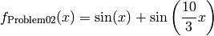
Bound constraints: 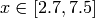
Univariate Problem02 function
Global optimum:  for 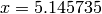
for 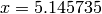
Univariate Problem03 test objective function.
This class defines the Univariate Problem03 global optimization problem. This is a multimodal minimization problem defined as follows:
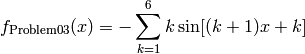
Bound constraints: 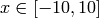
Univariate Problem03 function
Global optimum:  for 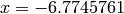
for 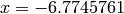
Univariate Problem04 test objective function.
This class defines the Univariate Problem04 global optimization problem. This is a multimodal minimization problem defined as follows:
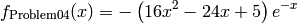
Bound constraints: 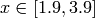
Univariate Problem04 function
Global optimum: 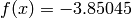 for 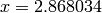
Univariate Problem05 test objective function.
This class defines the Univariate Problem05 global optimization problem. This is a multimodal minimization problem defined as follows:
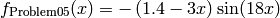
Bound constraints: 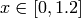
Univariate Problem05 function
Global optimum: 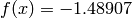 for 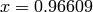
Univariate Problem06 test objective function.
This class defines the Univariate Problem06 global optimization problem. This is a multimodal minimization problem defined as follows:
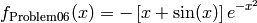
Bound constraints:
Univariate Problem06 function
Global optimum: 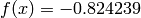 for 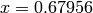
Univariate Problem07 test objective function.
This class defines the Univariate Problem07 global optimization problem. This is a multimodal minimization problem defined as follows:
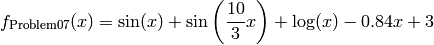
Bound constraints:
Univariate Problem07 function
Global optimum: 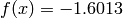 for 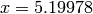
Univariate Problem08 test objective function.
This class defines the Univariate Problem08 global optimization problem. This is a multimodal minimization problem defined as follows:
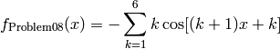
Bound constraints:
Univariate Problem08 function
Global optimum: 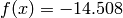 for
Univariate Problem09 test objective function.
This class defines the Univariate Problem09 global optimization problem. This is a multimodal minimization problem defined as follows:
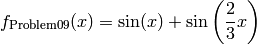
Bound constraints: 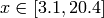
Univariate Problem09 function
Global optimum: 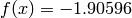 for 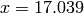
Univariate Problem10 test objective function.
This class defines the Univariate Problem10 global optimization problem. This is a multimodal minimization problem defined as follows:
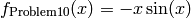
Bound constraints: 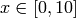
Univariate Problem10 function
Global optimum: 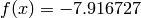 for 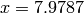
Univariate Problem11 test objective function.
This class defines the Univariate Problem11 global optimization problem. This is a multimodal minimization problem defined as follows:
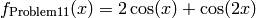
Bound constraints: 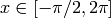
Univariate Problem11 function
Global optimum: 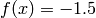 for 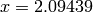
Univariate Problem12 test objective function.
This class defines the Univariate Problem12 global optimization problem. This is a multimodal minimization problem defined as follows:
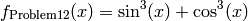
Bound constraints: 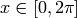
Univariate Problem12 function
Global optimum: 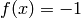 for
Univariate Problem13 test objective function.
This class defines the Univariate Problem13 global optimization problem. This is a multimodal minimization problem defined as follows:
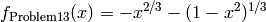
Bound constraints: 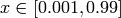
Univariate Problem13 function
Global optimum: for
Univariate Problem14 test objective function.
This class defines the Univariate Problem14 global optimization problem. This is a multimodal minimization problem defined as follows:
Bound constraints:
Univariate Problem14 function
Global optimum: for
Univariate Problem15 test objective function.
This class defines the Univariate Problem15 global optimization problem. This is a multimodal minimization problem defined as follows:
Bound constraints:
Univariate Problem15 function
Global optimum:  for
for
Univariate Problem18 test objective function.
This class defines the Univariate Problem18 global optimization problem. This is a multimodal minimization problem defined as follows:
Bound constraints:
Univariate Problem18 function
Global optimum:  for
for 
Univariate Problem20 test objective function.
This class defines the Univariate Problem20 global optimization problem. This is a multimodal minimization problem defined as follows:
Bound constraints:
Univariate Problem20 function
Global optimum:  for
for
Univariate Problem21 test objective function.
This class defines the Univariate Problem21 global optimization problem. This is a multimodal minimization problem defined as follows:
Bound constraints:
Univariate Problem21 function
Global optimum:  for
for
Univariate Problem22 test objective function.
This class defines the Univariate Problem22 global optimization problem. This is a multimodal minimization problem defined as follows:

Bound constraints:
Univariate Problem22 function
Global optimum: for